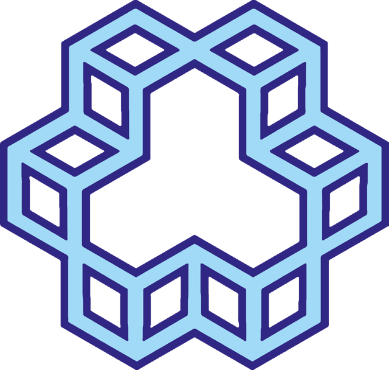
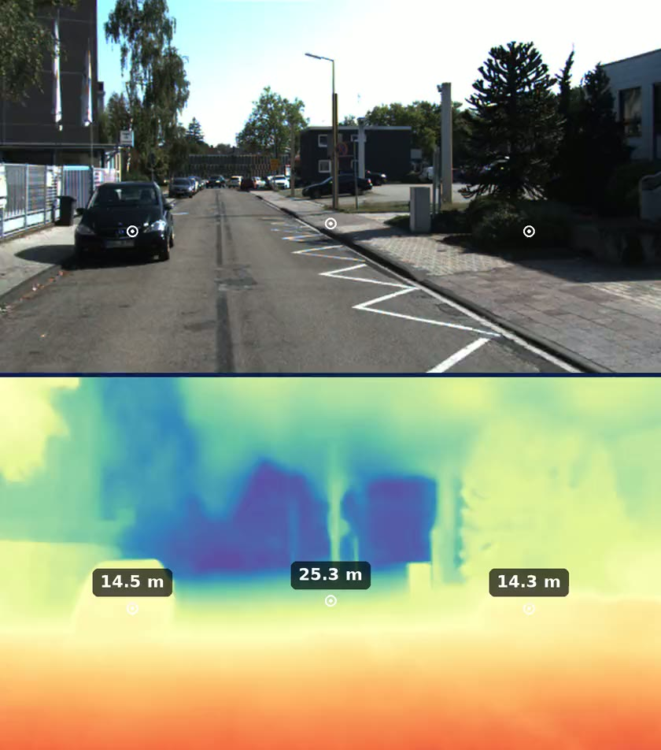
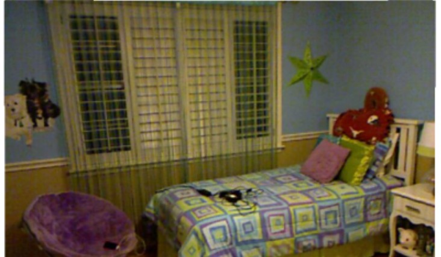
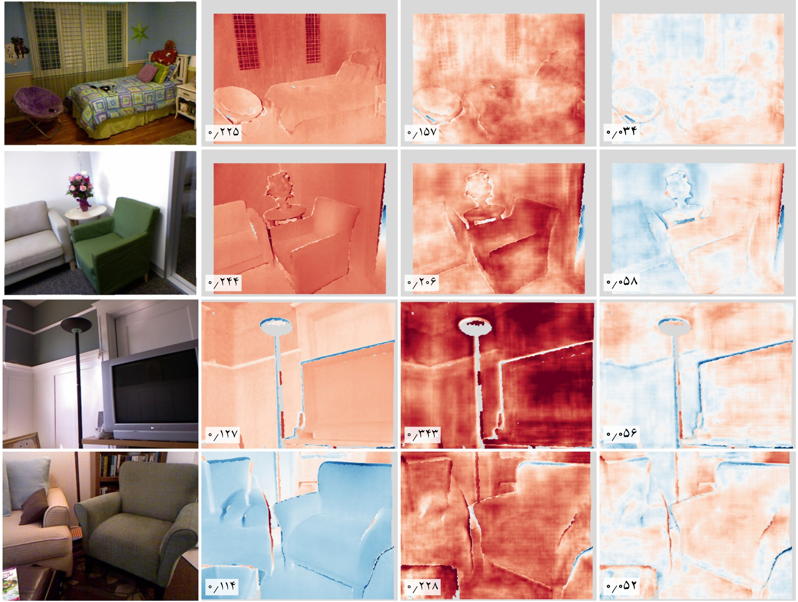
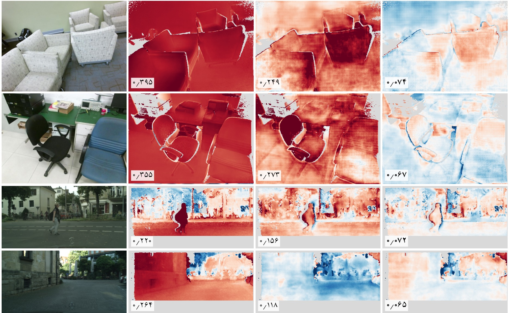

دفاع از پایاننامه کارشناسی ارشد · دانشگاه خواجه نصیرالدین طوسی
عمق متریک،
با دوربین در حلقه
تخمین عمق تکدوربینه با استفاده از پارامترهای کالیبراسیون داخلی بهعنوان ورودی


تخمین عمق تکدوربینه با استفاده از پارامترهای کالیبراسیون داخلی بهعنوان ورودی

مدلهای بنیادین عمق نسبی را خوب میفهمند، اما خروجی برحسب متر به دوربین و میدان دید وابسته است.
تراز مقیاس و جابجایی، شکل صحنه را آشکار میکند. کاربرد واقعی به عمق مطلق، بدون تراز و برحسب متر نیاز دارد.

از یک RGB منفرد، اندازه جسم و فاصله آن بهطور ذاتی درهمتنیدهاند.
پس مسئله را دقیقتر میکنیم: کدام بخش از خطا به خود تصویر مربوط است و کدام بخش را میتوان با دانستن دوربین حذف کرد؟
ماتریس کالیبراسیون، نگاشت پیکسل به پرتو را تعیین میکند. مدل آن را به یک توصیفگر نهبعدی و مستقلتر از اندازه تصویر تبدیل میکند.
ورودی دوربین در لایه نخست انکودر ViT-L با یک گیت یادگیریپذیر وارد میشود تا مدل از ابتدا بیاموزد چه زمانی به هندسه اعتماد کند.
توکنهای تصویری از ViT-L ازپیشآموزشدیده
توصیفگر ۹بعدی → انکودر دوربین → α قابل یادگیری
دیکودر همان مدل، بدون تغییر در معماری اصلی
مدل نهایی روی چهار مجموعه داده آموزش میبیند و روی هشت مجموعه آزمون، از جمله پنج حسگر دیدهنشده، ارزیابی میشود.
آزمونهای کنترلشده نشان میدهند اثر دوربین واقعی است، نه یک همبستگی اتفاقی با داده آموزش.
خروجی عمق با فاصله کانونی حرکت میکند؛ مدل از K بهعنوان هندسه استفاده میکند، نه یک نشانه تصادفی.
AbsRel کمتر بهتر است. مدل پیشنهادی در هر چهار مجموعه از مدل کنترل بهتر است.
وقتی K همراه تصویر میآید، یک مدل به حسگرهایی منتقل میشود که در آموزش حضور نداشتهاند.
روی دقیقاً همان تصاویر، اختلاف بین ساختار و مقیاس را جدا میکنیم.
| مدل / پروتکل | NYUv2 | Cityscapes | Kinect v1 | Kinect v2 |
|---|---|---|---|---|
| پایه منتشرشده · نسبی | 0.043 | 0.111 | 0.047 | 0.039 |
| پایه منتشرشده · متریک | 0.207 | 0.243 | 0.196 | 0.246 |
| پیشنهادی · متریک | 0.088 | 0.109 | 0.169 | 0.104 |
نقشه خطا نسبت عمق پیشبینیشده به مرجع را نشان میدهد. سفید یعنی مقیاس درست.


حذف K خطای NYUv2 را از ۰٫۰۸۳۶ به ۰٫۱۷۶۴ میرساند؛ تحریف f نیز خطا را مطابق هندسه جابهجا میکند.
مدل پیشنهادی در هر ۱۲ معیار اصلی بهترین است و ۲۰ تا ۵۰٪ از مدل کنترل خطای کمتری دارد؛ این الگو با هر دو اندازه انکودر ViT-S و ViT-L حفظ میشود و در ۱۲۰۵ از ۱۵۵۴ تصویر کمترین AbsRel را دارد.
در چهار حسگر دیدهنشده، کاهش خطا ۱۹ تا ۵۰٪ است؛ بدون آموزش مجدد برای هر دوربین.
بهترین مقدار در هر ستون متعلق به مدل پیشنهادی است؛ دو حسگر Kinect در آموزش دیده نشدهاند.
| مدل / مجموعه | NYU AbsRel | δ₁ | RMSE | City AbsRel | δ₁ | RMSE | K1 AbsRel | δ₁ | RMSE | K2 AbsRel | δ₁ | RMSE |
|---|---|---|---|---|---|---|---|---|---|---|---|---|
| پایه منتشرشده | 0.207 | 0.692 | 0.600 | 0.243 | 0.577 | 7.569 | 0.196 | 0.749 | 0.396 | 0.246 | 0.524 | 0.616 |
| کنترل | 0.133 | 0.856 | 0.395 | 0.136 | 0.851 | 5.938 | 0.314 | 0.478 | 0.532 | 0.209 | 0.677 | 0.470 |
| پیشنهادی | 0.088 | 0.945 | 0.309 | 0.109 | 0.894 | 5.417 | 0.169 | 0.766 | 0.369 | 0.104 | 0.906 | 0.351 |
پرسش و پاسخ